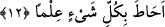
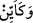

ALLAH SİZE GERÇEKTEN
BİR UYARICI İNDİRMİŞTİR
8. Rabbinin ve O’nun elçilerinin emrinden uzaklaşıp azmış nice memleketler
vardır ki, biz onları (ahâlisini) çetin bir hesaba çekmiş ve onları görülmemiş azaba
çarptırmışızdır.
9. Böylece onlar da yaptıklarının karşılığını tatmışlar ve işlerinin sonu tam bir
hüsran olmuştur.
10. Allah onlara şiddetli bir azap hazırlamıştır. Ey inanan akıl sâhipleri! Allah’tan
korkun. Allah size gerçekten bir uyarıcı (kitap) indirmiştir.
11. İman edip sâlih amel işleyenleri, karanlıklardan aydınlığa çıkarmak için size
Allah’ın apaçık âyetlerini okuyan bir Peygamber göndermiştir. Kim Allah’a inanır
ve faydalı iş yaparsa Allah onu, altlarından ırmaklar akan, içinde ebedî kalacakları
cennetlere sokar. Allah o kimse için gerçekten güzel bir rızık vermiştir.
12. Allah, yedi kat göğü ve yerden bir o kadarını yaratandır. Ferman bunlar
arasından inip durmaktadır ki, böylece Allah’ın her şeye kadir olduğunu ve her şeyi
ilmiyle kuşattığını bilesiniz.
“Rabbinin ve O’nun elçilerinin emrinden uzaklaşıp azmış nice memleketler vardır
ki,”.. âyet metnindeki “
/keeyyin” kelimesi kem-i haberiyye olup çokluk ifâde
etmektedir. “Karye” kelimesi ise insanların toplandığı yer demektir. Buna göre âyetin